센서
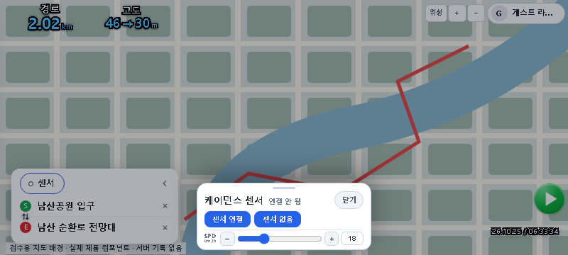

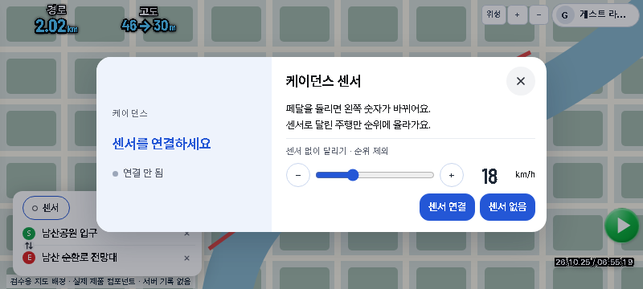
좁은 화면 · 667 × 300
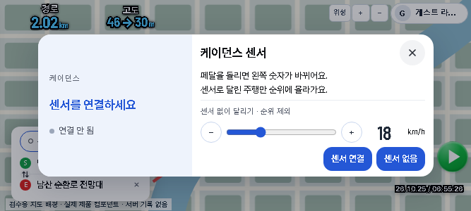
최종 검증: 화면 회귀64/64 · 묶음4 21/21 · 실제 진입8/8 · 프로필 동기화2/2 · 빠른 시험1360/1360 PASS. Chief 화면 확인 대기.
Chief 승인 시안12~15와 실제 구현 비교. 구현·감리·캡처: Codex 직접. fixture·시험 및 독립 diff 감리: Cursor CLI.
고정 디자인1~14 · 묶음3 보존 / 커밋·배포 없음. 브라우저에서 이미 열려 있었다면 새로고침해 주세요.



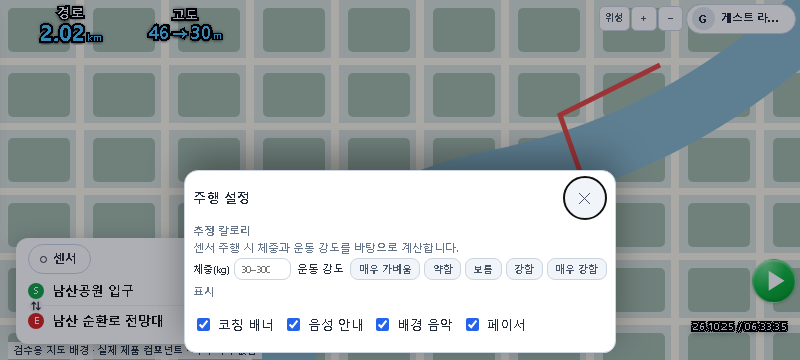

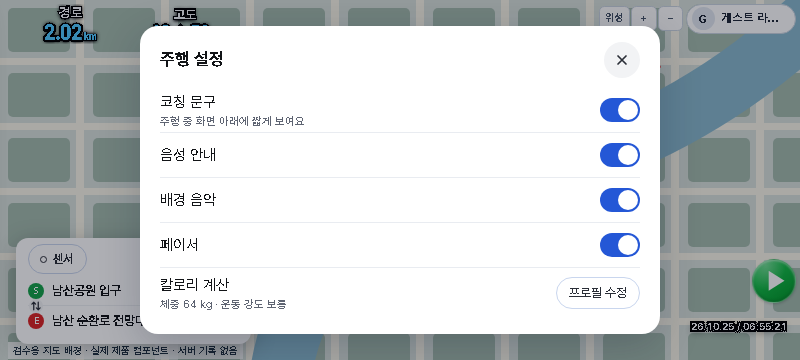
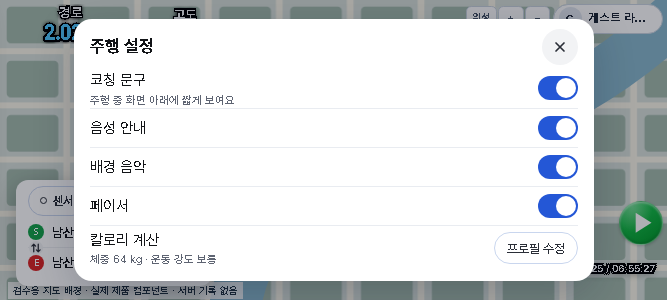
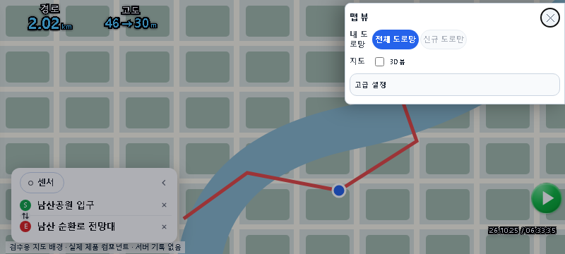

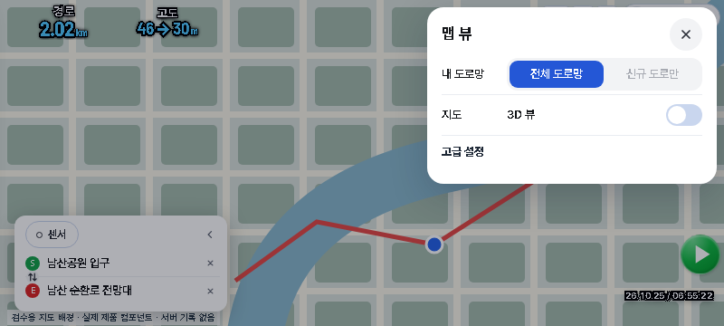
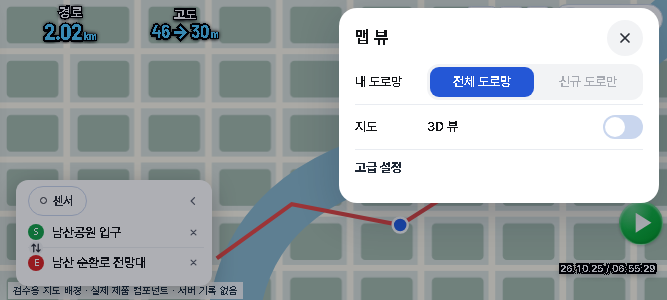

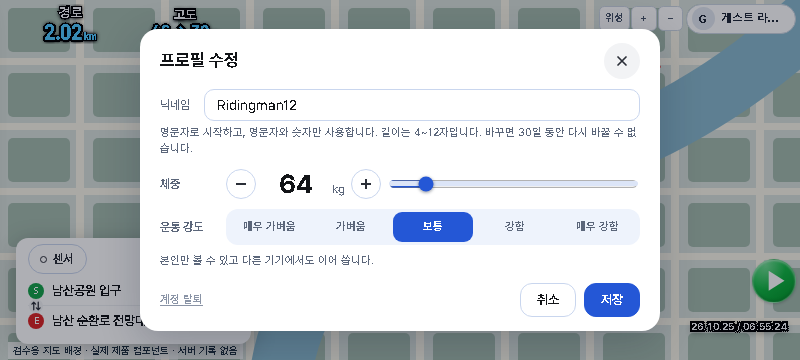
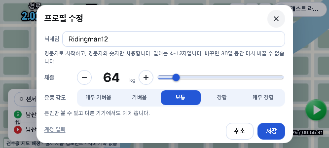